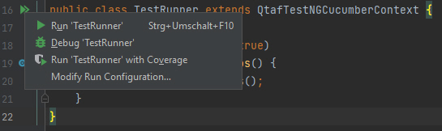

Create a Cucumber Project with QTAF⚓︎
This article describes how to set up a QTAF Cucumber project. It is assumed that you have already set up a Maven project using IntelliJ and have included QTAF as a dependency. How this can be done is described in the following article: QTAF - Project Creation.
Also you can use our QTAF with Cucumber example project to try it out.
Create folder and package structure⚓︎
The Java code of the Maven project is stored in the subfolder src/main/java, the resources (all other required files) in the subfolder src/main/resources.
Within the Java directory we create the package org.acme, because in this example we are creating a project for the fictitious company Acme GmbH. Furthermore, we create the folder features in the resources directory, which will later contain our feature files.
Creating test cases⚓︎
To create test cases using Qtaf with Cucumber, we first need to create a so-called test runner. This test runner is a class that provides information about the location of the Cucumber feature files and the step definitions by means of an annotation.
In the following example we assume that our source code is organised in the package org.acme. We create a new class in this package called TestRunner. This class must have the following properties:
- The class will have the annotation
@CucumberOptions. This annotation provides information on where to find the feature files(features = {"..."}), where to find the corresponding step definitions(glue = {"..."}), which tag (not) to run(tags = "...")and which Cucumber plugin to use to create the reports(plugin = {"..."}). - The
TestRunnerclass must inherit from the CucumberQtafTestContext class. - The
TestRunnerclass must contain a method that is annotated with the@DataProviderannotation of the TestNG framework and returns a list of scenarios, which is done by callingsuper.scenarios().
The following code shows a sample implementation of this class:
Creating a scenario listener⚓︎
In order for QTAF to be able to create log files for the executed test cases, you have to create another class in the folder you specified in the @CucumberOptions annotation in the glue attribute. In this case, this would be the folder org.acme.stepdefs.
In this folder, create a class called TestListener that inherits from the QTAF framework class QtafCucumberHooks and add the following methods to it:
Cucumber will automatically recognise this class as a listener class through the annotations @Before, @BeforeStep, @After and @AfterStep. Within this methods, we let the QTAF framework perform the further steps for logging by calling these methods.
Creating feature files⚓︎
In the TestRunner class we have specified that the feature files are to be found in the src/main/resources/features directory relative to the root directory of our project. In this folder we now place our first feature file with the name GoogleSearch.feature. The name of the file can be freely chosen. As long as the file ends with .feature and is located in the directory that we specified with the annotation @CucumberOptions, Cucumber is able to find this file and interpret it as a test case.
Now we write the following content into our feature file:
Creating Step Definitions⚓︎
Step definitions are Java classes that contain the code to be executed when a step is called in a feature file. For example, if we have defined the step Then Enter "Cucumber" in the search text box in our feature file, Cucumber does not yet know what to do when it sees this statement. To tell Cucumber this, we create a new class called StepDefs in the package org.acme.stepdefs. We have previously defined the package name via the annotation @CucumberOptions. Furthermore, classes that contain step definitions must inherit from the class QtafTestNGContext.
In the following example, all steps are defined that are called in our feature file. Among other things, this class provides the attribute driver, which provides an instance of a web driver.
Run program⚓︎
Now the project is ready so that we can run it for the first time. To do this, we click on an icon with a green file to the left of the name of the main class in IntelliJ. A dialogue then opens where we click on Run CucumberRunner. This first run allows QTAF to create further required directories and files on its own.

A browser will open for a short time. However, since we have not yet created any test cases, it will close again after a short time. Furthermore, a configuration file called qtaf.json is created in the resource directory, as well as the folder logs, in which you can already see log files for the test run we have just carried out.
The project is now ready for the creation of test cases.